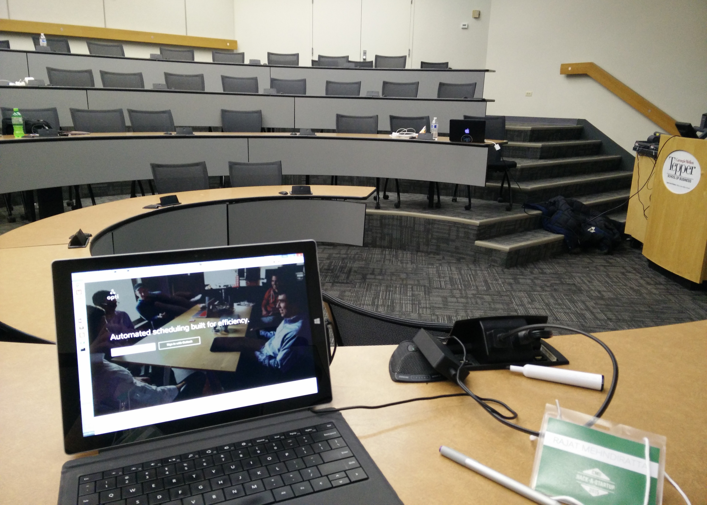
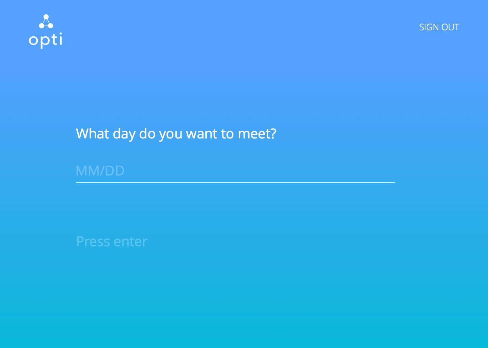
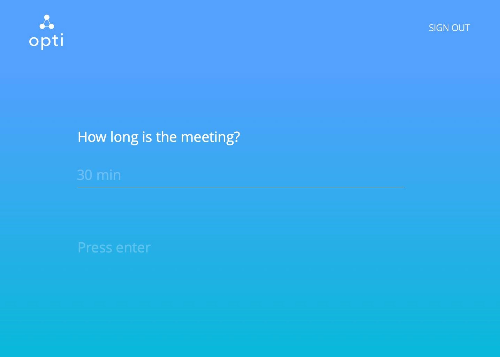
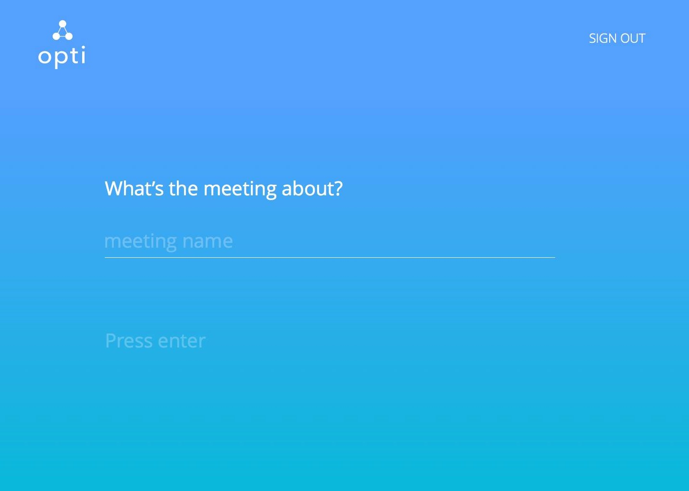

Opti enables anyone to find the perfect time for a group meeting. The user simply enters the day, duration, and guests he or she wants for the meeting, and Opti does the rest. It scans each guests' Google calendar and automatically selects a time when everyone is free. If no such time exists, it selects times when almost everyone is free and indicate the conflicts. After the user chooses an available time, Opti adds the meeting to all guests' calendars and sends them notifications.
We used Flask, RethinkDB, and Heroku. My contribution included Python code that converted times between the formats APIs used, the format our time-selection algorithm used, and the format our designers wanted the user to see. I also worked to integrate the Google Calendar API.